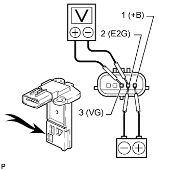
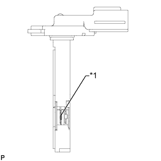

ДАТЧИК МАССОВОГО РАСХОДА ВОЗДУХА > ПРОВЕРКА |
| 1. ПРОВЕРЬТЕ РАБОТУ ДАТЧИКА МАССОВОГО РАСХОДА ВОЗДУХА |
Проверьте выходное напряжение.
|  |
Подайте напряжение аккумуляторной батареи на контакты 1 (+B) и 2 (E2G).
Подсоедините положительный (+) вывод вольтметра к контакту 3 (VG), а отрицательный (-) вывод – к контакту 2 (E2G).
Подайте воздух в датчик массового расхода воздуха и убедитесь в том, что напряжение изменяется.
 | Воздух |
|  |
Осмотрите платиновый проволочный элемент (подогреватель) датчика массового расхода воздуха и убедитесь в отсутствии посторонних частиц, как показано на рисунке.
| *1 | Платиновая нагреваемая проволока (подогреватель) |
Проверьте датчик температуры воздуха на впуске.
| *1 | Сопротивление | *2 | Температура |
| *3 | Допустимо | - | - |
| *a | Устройство с отсоединенным жгутом проводов (датчик масссового расхода воздуха) | - | - |
Измерьте сопротивление в соответствии со значениями, приведенными в таблице ниже.
| Контакты для подключения диагностического прибора | Режим | Заданные условия |
| 4 (THA) - 5 (E2) | -20°C (-4°F) | 12,5 - 16,9 кОм |
| 20°C (68°F) | 2,19 - 2,67 кОм | |
| 60°C (140°F) | 0,50 - 0,68 кОм |